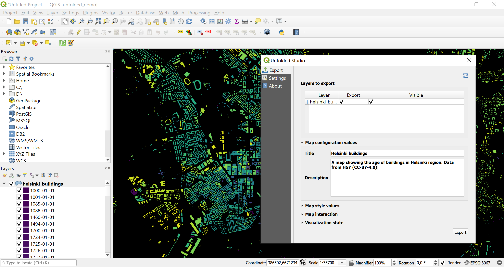
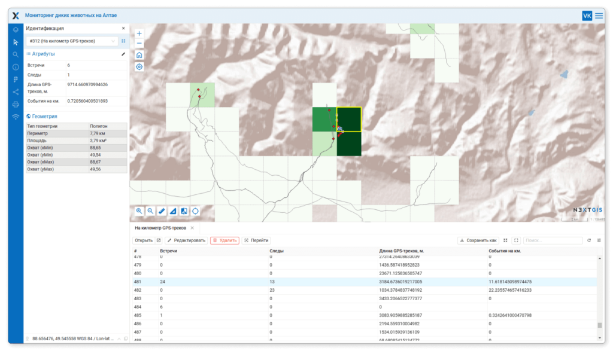
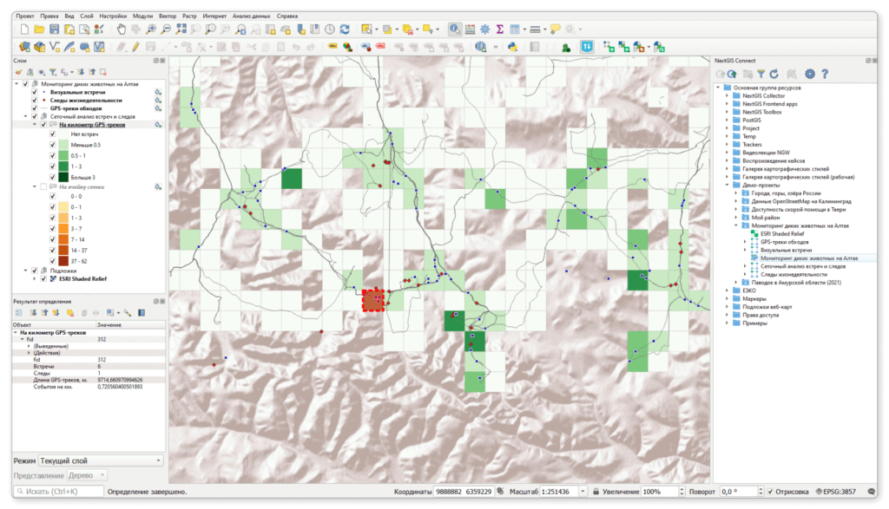
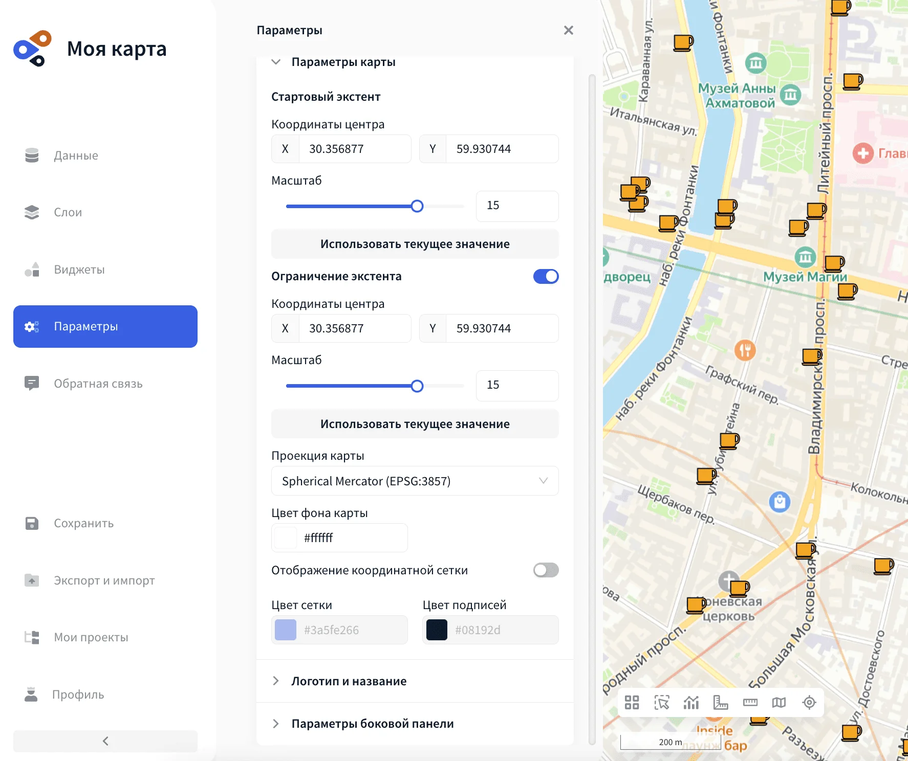

Онлайн-платформы для создания карт
1 Сервисы визуализации
1.1 Datawrapper
Не всегда для подготовки и публикации карт может быть использовано специализированное ПО. С развитием сферы инфографики и визуализации данных некоторые сервисы предлагают возможность создания и подготовки карт прямо в браузере.
Одним из общедоступных онлайн-сервисов для создания графиков и диаграмм является Datawrapper https://www.datawrapper.de/, который позволяет работать в окне браузера без установки на компьютер.
Почитать про создание карт и особенности можно в блоге сервиса https://blog.datawrapper.de/category/maps/ или в общей информации о картах https://www.datawrapper.de/maps
Для начала работы на странице https://www.datawrapper.de/maps нужно нажать кнопку Build your own map, которая переведет вас на страницу создания новой карты https://app.datawrapper.de/select/map.
Рекомендую аккуратно относиться к шаблонам для Российской федерации, так как они могут не соответствовать актуальным границам
1.2 Tilemapper
Для создания плиточной карты России можно воспользоваться онлайн-сервисом Tilemapper, в котором есть шаблон плиточной карты со всеми регионами https://mizinov.pro/tilemapper.
Сервис создан разработчиком Антоном Мизиновым (https://t.me/antonmizinov).
2 Платформа Foursquare studio
Foursquare studio https://studio.foursquare.com/
Изначально платформа создавалась как один из проектов для анализа данных Uber и по-прежнему существует в виде сервиса https://kepler.gl/. Большинство функций пришло именно оттуда.
Этот сервис также можно использовать для быстрой визуализации пространственных данных, но у него нет бэк-энда, поэтому результаты не сохраняются на платформе.
У платформы открытый исходный код, при желании ее можно развернуть на собственном сервере.
Впоследствии разработчики организовали стартап, который был выкуплен компанией Foursquare.
Большим преимуществом этой платформы, как и большинства других является то, что ваши карты сохраняются в личном кабинете и могут быть доступны с разных девайсов.
Использование сервиса бесплатное, но имеет ограничения на количество загружаемых вами данных и количество созданных карт.
С примерами карт можно ознакомиться в галерее https://studio.foursquare.com/sample-maps
Для платформы разработан модуль для QGIS, позволяющий создавать карты в нем и размещать на платформе.
Документацию по нему можно почитать либо на github, либо в документации платформы.

Похожая платформа - Felt https://felt.com/
Однако эта платформа предоставляет только 14 дней бесплатного пробного использования.
3 Отечественные платформы
3.1 NextGIS
Ссылка на платформу https://nextgis.ru/nextgis-com/

Наверно, один из самых старых разработчиков геоинформационных продуктов в нашей стране.
Платформа является условно бесплатной, так как имеет ограниченную бесплатную версию.

Видео туториалы по работе с платформой можно посмотреть на канале https://rutube.ru/u/nextgis/.
Документация доступна по ссылке https://docs.nextgis.ru/docs_ngweb/source/index.html.
Также имеет собственную вариацию программы QGIS для совместной работы с платформой.
Используйте настольную программу NextGIS QGIS для управления вашими картами и данными, которые хранятся в облачной Веб ГИС.
Публикация проектов QGIS в вашей Веб ГИС
Мгновенное редактирование веб-карт в облаке через QGIS

3.2 Геосемантика
Ссылка на платформу https://geosemantica.ru/platforma_geosemantica
Подробные туториалы по работе с платформой:
Как и предыдущая платформа является условно бесплатной.

3.3 EverGIS
Ссылка на платформу https://evergis.ru/
Кажется единственная бесплатная платформа аналогично Foursquare studio.
Еще большим преимуществом этой платформы является то, что здесь есть некоторые функции пространственного анализа, например:
- буферные зоны
- зоны доступности (изохроны)
3.4 FlexGIS
Ссылка на платформу https://flexgis.ru/


Инструкции по работе с платформой доступны по ссылке https://flexgis.ru/instructions

3.4.1 GeoHub
Ссылка на платформу https://geohub.ru/
Документация платформы https://docs.geohub.ru/